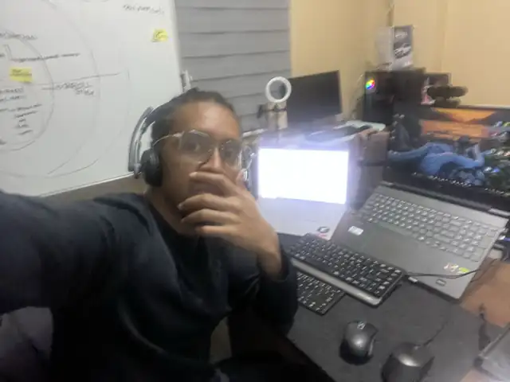

Turn more calls and form responses into booked visits.
FOR HEALTH, WELLNESS & AESTHETICS
Turn more leads into booked visits
I connect your marketing, follow-up and booking. Your team gets clear next steps. You see which leads become clients.
20 minutes · No pressure · Find out if a Diagnostic makes sense
Try the Growth System Scope EstimatorI build in your tools. You own the system. · 8 years working with medical and wellness practices
Rahmel Dela Cruz · Full-Stack Digital Marketing
Who this is for
For health, wellness and aesthetics businesses ready to book more visits.
Give each lead a clear owner and next step.
See which ads lead to booked visits.
Connect your website, booking, CRM and reports.
Where to start
Fix follow-up before adding more leads.
Slow replies cost you bookings. Give your team a clear path from first contact to first visit.
- Set a reply target for each new lead.
- Keep calls and forms in one place.
- Make the next booking step clear.
- Show your team which leads need a reply.
- Track which leads book and attend visits.
The Optivue Growth System
Connect each step from lead to booked visit.
Five connected stages
Get the right local leads.
How it works
Diagnose. Build. Improve.
Diagnose
I review your website, calls, forms, CRM, follow-up, booking and tracking. You get a 90-day plan with clear priorities.
Build
I build the fixes your plan puts first. These cover booking, tracking, lead routing, CRM stages and follow-up.
Improve
Each month, we review results. I fix the next gap.
Results depend on access to your systems, your team's follow-up, booking capacity, and budget. I'll be clear about what I control and what I don't.
Client work
Selected client work
Client projects. I share figures after clients approve them and records support them. [CONFIRM permission for each]
Revive Medical Wellness & Aesthetics
Hagerstown, Maryland · Medical wellness clinic
SEO and website copy for local searches. Copy and image plans for Google Business Profile. [CONFIRM exact scope]
CBP Online Institute / Ideal Spine
Chiropractic education platform
A custom page and member hub in Kajabi. I use HTML, CSS and JavaScript for the page design.
LearnX by CJB Systems
Western Australia · Compliance onboarding product
Plans for content and search. Blog posts, technical SEO, work processes and reports.
Work lab
See how the system works.
Example views show how leads, follow-up, bookings and reports connect.
Lead routing and consent-based follow-up
Landing pages with a clear next step
Track the booking path with GA4 and GTM
Help local clients find your business
Sample tracking view
Reporting before and after tracking.
Link clicks, calls and forms to each booking. See which leads become clients.
Pricing
Build the system before you spend more on ads.
Start with a Diagnostic. Build the fixes your plan puts first. Review results and improve.
ONE-TIME
Growth Systems Diagnostic
A fixed-scope review of your lead-to-visit process.
- Lead-to-patient journey map
- Website, call, form, booking, CRM, follow-up, and tracking review
- Top three bottlenecks
- Prioritized 90-day plan and build estimate
7–10 business days after access and intake.
FIXED SCOPE
90-Day Growth Foundation Launch
I build the connected system. You own the setup.
- One booking path
- Call, form, and booking setup
- CRM stages and lead routing
- Consent-based email and SMS follow-up
- Conversion tracking, reporting, documentation, and handoff
Fixed scope, paid in milestones.
Ongoing growth work
ONGOINGGrowth Operations
Each month, I work on the next growth priority.
- Monthly acquisition, conversion, follow-up, and tracking priorities
- Campaign management where justified
- Monthly reporting and decision review
3-month minimum, then quarterly.
MAINTENANCE
Systems Care
Keep your systems working after active growth work ends.
From $350/month
- Monthly system health check
- Testing forms, booking, and automations
- Small fixes within a set support allowance
Excludes ad management, new pages, new automations, and major CRM work.
Complex or multi-location clinics receive a custom proposal. Ad spend, software, SMS/email usage, and call tracking are paid directly by your clinic.
Your tools work together. You own the system.
I connect your landing page, calls, forms, CRM, follow-up, booking and reports. Your team gets one clear process.
Know what to fix. Get the work done.
I recommend the smallest fix which solves the problem. We check follow-up before you spend more on ads.
Who controls your systems?
Access disappears when the contract ends.
- Your provider controls the accounts
- You see little of the process
- Reports show marketing activity without sales outcomes
You own the working system.
- Your accounts and data
- Documented workflows
- See which leads become clients
Founding Clinic Program
Working fit
Clear expectations before work begins.
Optivue is a fit if
- You run a health, wellness or aesthetics business with space for bookings.
- You get leads or plan to generate them.
- You provide access to your website, CRM, booking, and call data.
- Your team wants to improve follow-up.
- You want systems you own and honest reporting.
Optivue is not a fit if
- You only want a website or ads in isolation.
- You want guaranteed patient numbers.
- You can't provide access to your systems.
- Your team lacks time to answer leads or book visits.


How I work
Audit first. Strategy next. Then systems.
I'm Rahmel. I build and manage your website, tracking, CRM and follow-up. You work with me throughout the project.
My eight years of work cover medical, wellness, consulting and other service businesses. I focus on the path to a booked visit.
I work with up to four businesses at once. I handle your build and answer your questions. I tell you before any handoff.
[CONFIRM: Based in the Philippines. I hold calls during US Eastern business hours.]
FAQ
Questions before you start.
Why is the Diagnostic paid?
You pay for a plan based on your systems and data. The plan shows what to fix first and which spending to delay.
Do you guarantee more patients?
No one responsibly does. Results depend on demand, your offer, booking capacity, and how your team follows up. I commit to a defined process, clear scope, systems you own, and honest reporting.
When should I spend more on ads?
Check the booking path first. The Diagnostic shows whether you need more leads or better follow-up.
Do I own everything you build?
Yes. Your ad accounts, website, CRM, tracking, workflows, data, and documentation stay yours.
What do you need from my team?
Access to your systems, prompt approvals, and a team ready to follow the new process.
Another provider quoted $999 a month. Why the difference?
Scope affects price. I review and build the full path from lead to booked visit. For ads alone, consider a provider focused on ad management.
[CONFIRM: What hours are Fit Calls available?]
[CONFIRM: Calls are available during US Eastern business hours.]
Next step
Find the next step toward more booked visits.
Tell me how your team handles leads and bookings. In 20 minutes, we'll discuss whether a Diagnostic fits your needs.